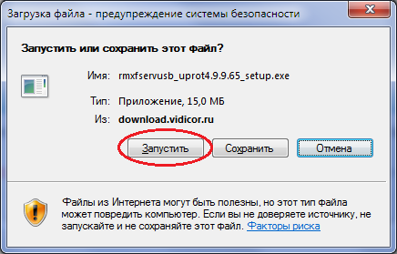
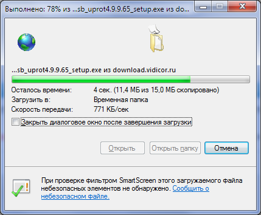
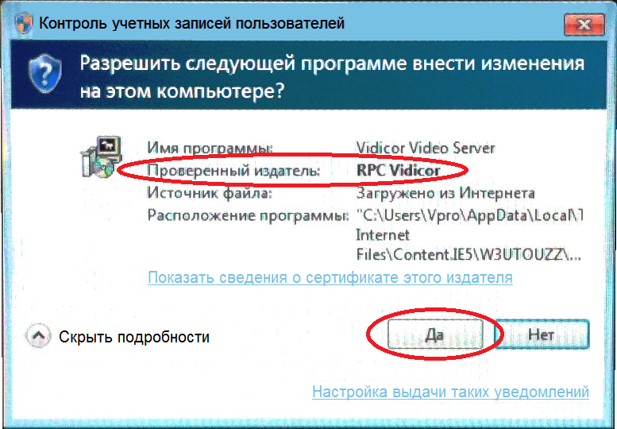
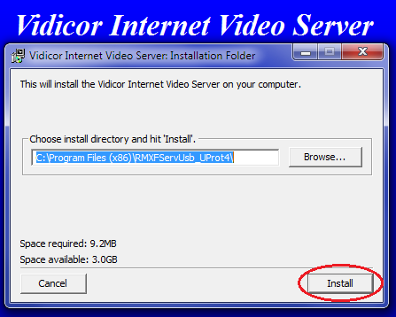
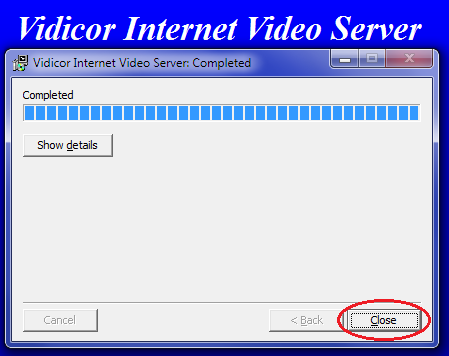

Установка программной версии видеосервера «Vidicor» с USB токеном
Для использования системы необходимо установить на компьютер программный компонент «Vidicor-S»; для этого необходимо обладать правами администратора
Если все требования выполнены, то для установки компонента видеосвязи
При установке, возможно, потребуется ввести , которые получены при покупке ПО
Система предложит сохранить или запустить файл установки — согласитесь и запустите его; далее следуйте подсказкам мастера:
    
Система интернет-видеосвязи "Vidicor Video System"